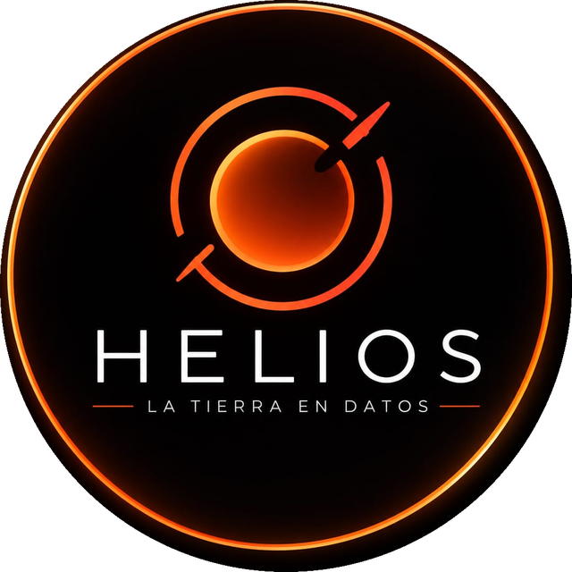
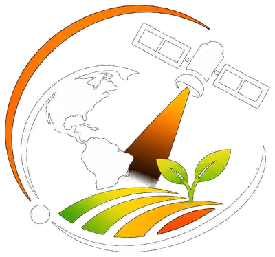

Ecuador
37°C
Sensación térmica40°C
Rusia
-2°C
Sensación térmica
-24°C
Frío extremo — km/h
Temperatura actual (°C)
-50-30-10103050

Explora el clima y el calor extremo del planeta.
Datos de Open-Meteo y NASA
🌐 15.2 °C
🌡️ 50.1 °C
❄️ -58.4 °C
| Ciudad | Temp. | Sensación | Viento | Clima |
|---|
sobre el promedio de 1951–1980. El 2024 sigue siendo el año más cálido y los 10 años más recientes son los más cálidos del registro.
NASA · Temperatura global ↗La actividad humana ha aumentado el CO₂ de la atmósfera cerca de un 50 % desde la era industrial (1750).
NASA · Dióxido de carbono ↗de subida desde 1993, medida por satélites. Se debe al agua del hielo que se derrite y a la expansión del agua al calentarse.
NASA · Nivel del mar ↗Cifras publicadas por la NASA en las fechas indicadas. Las páginas fuente se actualizan, así que ahí está siempre el dato más reciente.
de rendimiento al final del siglo en un escenario de emisiones altas, con efectos visibles desde alrededor de 2030. Será más difícil cultivarlo en el trópico.
en el mismo escenario: crece en zonas templadas como el norte de EE. UU., Canadá y China. Pero esas ganancias del norte no compensan las pérdidas de maíz en el sur global.
Los modelos no coinciden del todo a escala global, pero señalan descensos en ciertas zonas.
Qué lo causa: más temperatura, cambios en las lluvias y más CO₂ (que ayuda sobre todo al trigo). Son proyecciones de un estudio de la NASA publicado en Nature Food (2021), no mediciones de hoy; los resultados dependen del escenario de emisiones.

La Tierra en datos: una plataforma para ver y entender el clima y el calor extremo del planeta, en un globo 3D que puedes girar con el dedo.
Que cualquier persona pueda ver, en segundos, qué tan caliente o frío está el mundo, y entender por qué importa: desde el clima de tu ciudad hasta el cambio climático y su efecto en la agricultura.
Gira el globo, elige una región y cambia su aspecto: temperatura, satélite, noche o día.
Escribe una ciudad o un país y mira su temperatura, sensación térmica, humedad, clima y viento en vivo.
Un ranking en vivo de 18 ciudades del mundo, de la más cálida a la más fría.
Avisos de calor, frío, viento y tormentas calculados con datos reales, más cifras de la NASA sobre cambio climático y agricultura.
Ojo: las regiones, las tarjetas de ejemplo, «Datos globales» y «Alertas recientes» de la pantalla de Inicio usan valores aproximados de ejemplo, no mediciones en tiempo real. Los datos en vivo están en la búsqueda, en Clima global y en Alertas.
HELIOS es un proyecto educativo. No reemplaza los avisos oficiales de los servicios meteorológicos: ante una alerta real, consulta a las autoridades de tu país.